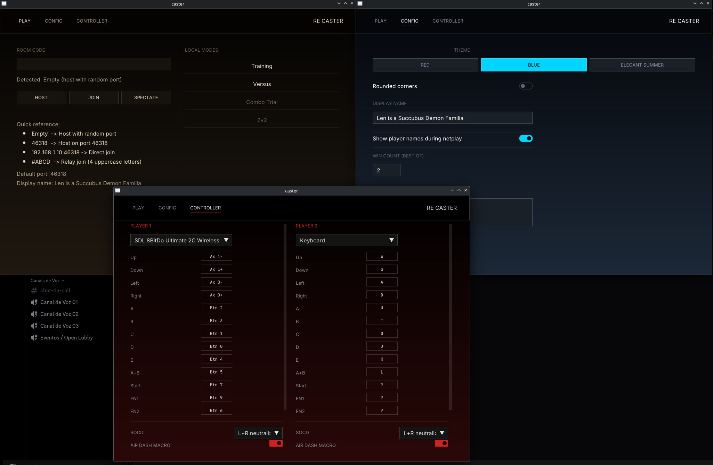

Rollback netplay for MBAACC. Host a room, trade codes, and play — frame-accurate rollback, NAT hole-punching, zero port forwarding.

Everything you need to host, join and train — online or offline. Unfinished but actively developed: expect bugs, desyncs and breaking changes between releases.
State save/restore, RNG synchronization and desync detection keep both players on the same timeline, even when one side lags.
Host a session, share a #ABCD room code. The built-in Go relay handles NAT traversal via hole-punching — no port forwarding, ever.
Prefer LAN or a low-ping setup? Connect straight over IP:port and skip the relay entirely.
Keyboard and gamepads through SDL2 with fully customizable mapping, persisted across sessions.
Optional per-player 9AB / 7AB macro that expands into jump + air dash. Tunable jump_frames (1–15), off by default.
Warm up in Training mode while waiting. When a peer connects, the match launches automatically — no staring at a waiting screen.
NetplaySession and GameRunner each run on dedicated jthread workers with async command queues — the GUI stays fluid even mid-desync.
When an opponent closes the game, the peer detects the ENet drop within milliseconds and auto-closes with a clear message.
No installer, no configuration file to hunt down. Two files, one folder.
Download caster.zip from the Releases page. It contains caster.exe and hook.dll.
Extract both files into the same folder as MBAA.exe. That's it — no install step.
Launch caster.exe, hit Host and share your room code — or join by #code or direct IP:port.
# host a netplay session caster.exe --host # join via relay room code caster.exe --join=#ABCD # or join directly over IP:port caster.exe --join=192.168.1.10:46318 # offline modes caster.exe --training caster.exe --versus
ReCaster keeps CCCaster's mission but moves the whole thing to current tooling — from language standard to build system.
| Area | CCCaster | ReCaster |
|---|---|---|
| Language | C++14 | C++23 |
| SDL | SDL 1.2 | SDL 2.0 |
| Networking | Manual Winsock sockets (TCP/UDP) | ENet (reliable UDP) |
| Hashing | MD5 + miniz compression | xxHash128 (XXH3), no compression needed |
| GUI | AntTweakBar / ImGui on SDL 1.2 | Dear ImGui on SDL 2.0 + OpenGL 3.0 |
| Build system | Makefile | CMake + MinGW cross-compile |
| Relay | External Python script | Built-in Go server with room codes |
| Dependencies | Prebuilt static libs | Fetched from source via CMake FetchContent |
A lot of ideas are on the way, several of them inspired by tools from other projects in the community.
Late-join an ongoing match and watch it replay through rollback.
Input sequences with hit/miss detection and an in-game overlay.
Custom palettes, but easier to set up than before.
Automatic updates from GitHub releases, with a progress bar.
"Playing MBAACC" rich presence with Click to Join invites.
Automatic tournament check-in and result reporting via the Challonge API.
Reversals, save states, frame data, hitbox viewer, RNG control, position lock.
Watch a saved replay and take control of a player at any frame to practice punishes.
Steam P2P networking with invites, friends list and native rich presence.
4-player online mode with adapted rollback.
Spectator, custom palettes, combo trials, the in-game overlay and the auto-updater are temporarily removed from current builds — all of them planned to return.